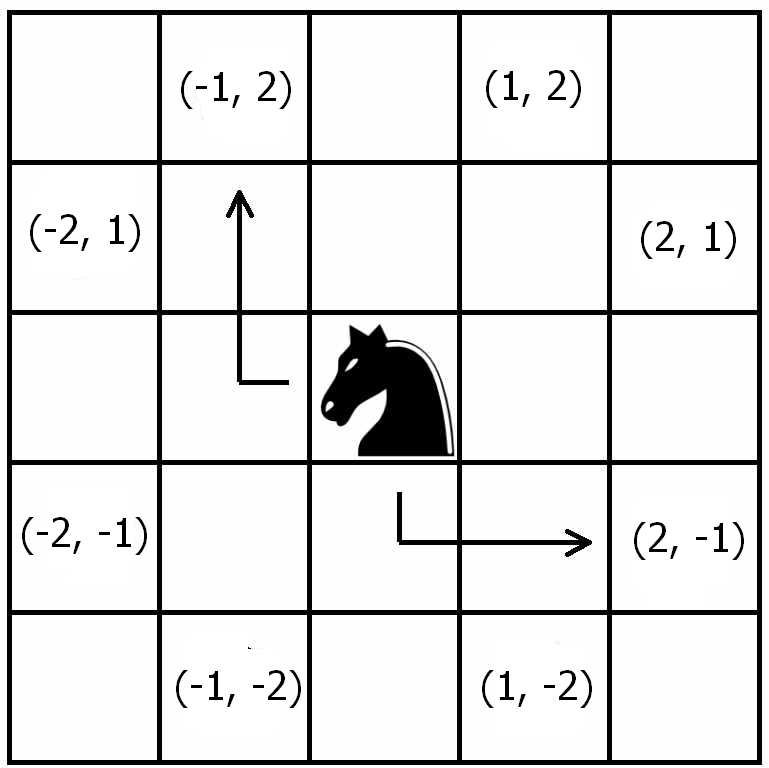
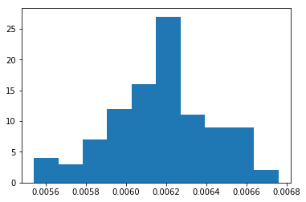

Puzzle do cavalo no tabuleiro infinito com NumPy
Para estrear o blog, escolhi explorar um puzzle probabilístico, que vi no blog do David Robinson, que consiste em estimar a probabilidade de um cavalo voltar à sua posição inicial após ter saltado aleatoriamente 20 vezes num tabuleiro de xadrez infinito (sendo os 8 possíveis saltos igualmente prováveis).
Em seu post, David inteligemente escolhe abordar o problema pelo tidyverse, o que o permite simular o experimento de maneira eficiente e numa estrutura que facilita a criação de visualizações do problema com o ggplot2.
Porém esse aqui não é um post sobre R. Como estou aprendendo Python, achei que seria interessante tentar fazer a mesma simulação com uma de suas bibliotecas mais famosas, o Numpy, para praticar e ver se ele cumpre o que promete: operações vetorizadas e eficientes.
O que está por trás da eficiência do Numpy #
O Numpy chega para suprir uma desvantagem que o Python tem por ser uma linguagem de tipagem dinâmica e de script (não-compilada): ele não é tão bom em fazer repetidas operações múltiplas vezes. Precisamente o que garante a ele uma vantagem pelo lado do desenvolvimento de código (uma linguagem solta, fácil de aprender) é o que compromete sua performance.
Para ilustrar essa dificuldade, vamos imaginar que queremos somar duas listas de números elemento por elemento. Uma lista em Python comporta qualquer tipo de dado (integer, float, string, ou até outras listas), e ele não tem como saber de antemão que a lista é composta somente de integers, por exemplo. Então, o que ele fará a cada operação é primeiro verificar o tipo de cada elemento para depois descobrir que “soma” ele deve fazer. Porque, por exemplo, somar dois integers é diferente de somar dois strings:
1 + 2
3
"1" + "2"
'12'
E é esse type-checking uma das razões que acabam retardando muito a operação como um todo, principalmente quando isso vai se acumulando na casa dos milhões. Numa linguagem compilada e em que você precisa declarar o tipo de suas variáveis, isso não seria um problema.
O que o Numpy faz é, ao invés de verificar o tipo dos elementos cada vez que a operação for chamada, ele o faz uma vez somente para depois executar a operação a partir dessa informação (para isso serve o atributo ‘dtype’ do ndarray - de n-dimensional array -, a estrutura de dados básica do Numpy). Além disso, as operações rodam no background em código C.
O custo disso é que a estrutura básica do Numpy perde a flexibilidade da lista, já que ele comportará um tipo de dado somente. Mas é um custo que estamos dispostos a pagar. Por exemplo:
import numpy as np
a = np.array([1, 2, 3, 4])
a.dtype
dtype('int32')
Se tentarmos incluir um string nesse ndarray, ele será convertido para um integer:
a[0] = "12"
a
array([12, 2, 3, 4])
Mas se tentarmos incluir um número complexo, obtemos um erro:
a[0] = 2 + 1j
---------------------------------------------------------------------------
TypeError Traceback (most recent call last)
<ipython-input-6-65561a8fbe75> in <module>
----> 1 a[0] = 2+1j
TypeError: can't convert complex to int
Esse comportamento é muito similar ao vetor do R.
Simulando os movimentos do cavalo #
Dito isto, vejamos o que o Numpy pode fazer. Mas antes um esclarecimento
- devo todo o thought process no que diz respeito à modelagem ao Robinson, e encorajo a todos lendo que confiram o post dele, se não antes, depois de ler aqui. O único trabalho que tive foi o de escrever o código em Python.
A ideia de Robinson para a simulação foi imaginar o tabuleiro como um plano cartesiano, em que o cavalo está no ponto de origem, (0, 0), podendo saltar dali para oito casas possíveis, com igual probabilidade, respeitando sempre as regras do xadrez, como na imagem:

Daí podemos notar que, se o cavalo pular para uma casa de coordenada x, a coordenada y terá que ser igual a 3 - abs(x). Mas devemos tomar o cuidado para assegurar que a coordenada y também possa ser negativa.
Com isso em mente, podemos simular um único salto.
# sorteamos um dos números em parênteses para obter o x
x = np.random.choice((1, 2, -1, -2))
# e calculamos o y pela relação já descrita
y = (3 - abs(x)) * np.random.choice((1, -1))
print(x, y)
2 1
Mas, é claro, não é interessante simular somente um salto. Queremos, na verdade, 20 deles, precisamos de um vetor.
move_x = np.random.choice((1, 2, -1, -2), size=20)
move_y = (3 - abs(move_x)) * np.random.choice((1, -1), size=20)
print(move_x, move_y, sep="\n")
[-2 1 -1 2 1 1 2 2 -1 -2 -2 2 -1 2 -2 2 -1 1 2 1]
[-1 2 2 -1 -2 -2 1 -1 2 1 -1 1 2 -1 -1 1 -2 -2 1 2]
Ótimo! Foi bastante simples. É legal observar como funciona a sintaxe do Numpy. Por ele ser totalmente voltado para operações vetoriais, podemos fazer operações aritméticas em vetores elemento por elemento sem qualquer for loop, bata subtrair de 3 o valor absoluto do vetor move_x, como se ele fosse um escalar, e está feito!
Agora, sabendo disso, se realmente quisermos computar uma probabilidade, de nada adianta termos somente uma amostra com vinte saltos aleatórios do cavalo, precisamos de muitas mais. Vejamos com cem mil vezes mais. Com o Numpy, isso é bem fácil de ser feito.
move_x = np.random.choice((1, 2, -1, -2), size=20 * 100000).reshape((20, 100000))
move_y = (3 - abs(move_x)) * np.random.choice((1, -1), size=20 * 100000).reshape(
(20, 100000)
)
print(move_x, move_y, sep="\n\n") # sep = '\n\n' serve para espaçar o output do print
[[ 1 -2 1 ... -1 2 2]
[ 1 1 -2 ... 2 2 -2]
[ 1 2 -1 ... -1 1 1]
...
[-1 1 1 ... 2 2 -2]
[-1 1 2 ... 1 -1 2]
[-1 -2 1 ... 2 -2 2]]
[[-2 1 -2 ... 2 1 1]
[ 2 -2 -1 ... 1 -1 -1]
[ 2 -1 -2 ... 2 2 2]
...
[-2 -2 2 ... 1 1 1]
[-2 2 -1 ... 2 -2 -1]
[-2 -1 -2 ... 1 -1 -1]]
No código acima eu primeiro gerei 2 milhões de saltos em um vetor, e depois o reorganizei como uma matriz 20 x 100.000. Me acostumei a enxergar matrizes como vários vetores-coluna agrupados, então foi assim que fiz, questão de preferência. Dessa forma, cada coluna representa uma tentativa e cada linha um salto.
Para o próximo passo, queremos descobrir em que posição o cavalo está na medida em que se move pelo tabuleiro. Podemos fazer isso ao calcular a soma cumulativa das colunas.
Para isso, basta utilizarmos o método ‘cumsum’ do ndarray, com o argumento de axis igualado a 0, o que quer dizer que ele vai fazer a soma cumulativa “down the rows”, linhas abaixo (o 0 é porque a linha é o “primeiro” elemento do “shape” de uma matriz bidimensional, (20, 100000)), o que é justamente o que queremos, já que interpretamos cada linha como um salto:
position_x = move_x.cumsum(axis=0)
position_y = move_y.cumsum(axis=0)
print(position_x, position_y, sep="\n\n")
[[ 1 -2 1 ... -1 2 2]
[ 2 -1 -1 ... 1 4 0]
[ 3 1 -2 ... 0 5 1]
...
[ 4 -5 -8 ... 4 17 3]
[ 3 -4 -6 ... 5 16 5]
[ 2 -6 -5 ... 7 14 7]]
[[ -2 1 -2 ... 2 1 1]
[ 0 -1 -3 ... 3 0 0]
[ 2 -2 -5 ... 5 2 2]
...
[ 12 -7 -12 ... 0 9 1]
[ 10 -5 -13 ... 2 7 0]
[ 8 -6 -15 ... 3 6 -1]]
Mas, como o que nos interessa para responder ao problema é somente a última linha (onde ele parou no plano quando deu o último salto), podemos extrair somente ela pedindo a linha de indíce -1 de nossa matriz (no Python, -1 equivale ao último elemento, -2 ao penúltimo etc.).
print(position_x[-1], position_y[-1], sep="\n\n")
[ 2 -6 -5 ... 7 14 7]
[ 8 -6 -15 ... 3 6 -1]
Agora, para de fato termos uma estimativa da probabilidade do cavalo voltar à origem após 20 saltos aleatórios, vamos calcular a frequência relativa desse evento em cem mil tentativas. Podemos fazer isso da seguinte maneira:
((position_x[-1] == 0) & (position_y[-1] == 0)).mean()
0.00648
Aqui, o que o Numpy fez primeiro foi criar um vetor de booleans, ao comparar os dois vetores elemento por elemento, retornando Verdadeiro somente quando ambos foram iguais a zero, caso em que ele retornou para a origem concluído seu random walk.
Calculado esse vetor, o que fiz foi pedir sua média, e isso me dá justamente a frequência relativa do evento de interesse: é a contagem das vezes que o evento aconteceu (a soma dos verdadeiros, lidos como 1 pelo método ‘mean’) sobre o comprimento do vetor.
E assim está pronto. Este é um resultado coerente com o obtido por Robinson, o que é confortante. A probabilidade em questão é de aproximadamente 0.6%; ou seja, a cada 1000 tentativas, podemos esperar que, em média, em 6 delas o cavalo voltará à origem após dar 20 saltos aleatórios.
Podemos ter um relance da distribuição de probabilidades do problema com um simples histograma, feito com 100 repetições do experimento.
import matplotlib.pyplot as plt
%matplotlib inline
# isso é uma list comprehension
knight_probs = [knight_infinite_board(100000) for _ in range(100)]
plt.hist(knight_probs, bins = 20)

A eficiência em números #
E, só para coisa não ficar vaga, quão eficiente é o Numpy afinal? Podemos verificar isso facilmente com o magic command do IPython, o %%timeit. Criei uma função que toma como argumento qualquer número de tentativas para testarmos o algoritmo.
def knight_infinite_board(trials):
move_x = np.random.choice((1, 2, -1, -2), size=20 * trials)
move_y = (3 - abs(move_x)) * np.random.choice((1, -1), size=20 * trials)
position_x = move_x.reshape((20, trials)).cumsum(axis=0)[-1]
position_y = move_y.reshape((20, trials)).cumsum(axis=0)[-1]
return ((position_x == 0) & (position_y == 0)).mean()
%%timeit
knight_infinite_board(100000) # cem mil tentativas
130 ms ± 4.16 ms per loop (mean ± std. dev. of 7 runs, 10 loops each)
%%timeit
knight_infinite_board(1000000) # 1 milhão!
1.15 s ± 97.2 ms per loop (mean ± std. dev. of 7 runs, 1 loop each)
É extraordinariamente rápido. Mesmo quando se trata de cálculos com uma matriz de 20 x 1 milhão! E meu computador certamente não ajuda. O mesmo feito no base Python seria absurdamente mais lento.
Conclusões #
Acho que com esse simples exercício, pudemos mesmo atestar que o Numpy é uma ferramenta muito útil, garantindo eficiência com uma sintaxe simples e limpa. Há dentro dele ainda muito mais a ser explorado do que o exposto aqui, incluindo as mais diversas distribuições probabílistas com np.random, manipulação de matrizes com np.linalg etc. O numpy é muito usado pelas mais importantes bibliotecas relacionadas a Data Science e Machine Learning, como pandas e scikit-learn, por isso um conhecimento apropriado de suas funcionalidades pode ajudar muito se o objetivo é crescer na área de data science.
Pretendo trazer outros posts em que o usarei, mas por ora ficarei por aqui. Espero que tenha sido proveitoso. Toda crítica/sugestão será muito bem-vinda.